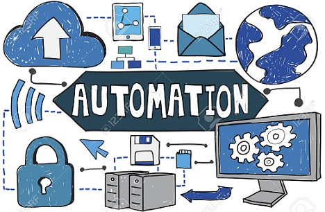

OVI PARA EL CURSO 301122_81
OVI PARA EL CURSO 301122_81
Mecanismos de Seguridad

Mecanismos de Seguridad
Los mecanismos de seguridad son también llamadas herramientas de seguridad y son todos aquellos que permiten la protección de los bienes y servicios informáticos.
Estos mecanismos pueden ser algún dispositivo o herramienta física que permita resguardar una información, de un software o sistema que de igual manera ayude de algún modo a proteger un archivo.
Los mecanismos también reciben el nombre de controles ya que dentro de sus funciones se encuentran el indicar la manera en que se deben ejecutar las acciones que permitan resguardar la seguridad y se eviten vulnerabilidades en la misma.
Finalmente los mecanismos pueden clasificarse de acuerdo con el objetivo principal de los mismos en:
Mecanismos preventivos. son aquellos cuya finalidad consiste en prevenir un ataque informático. Básicamente se concentran en el monitoreo de la información registrando las actividades que se realizan en la organización y control de todos los activos y de quienes acceden a ellos.
Mecanismos detectores. Son aquellos que tienen como objetivo detectar todo aquello que pueda ser una amenaza para los bienes. Ejemplos de éstos son las personas y equipos de monitoreo, quienes pueden detectar cualquier intruso u anomalía en la organización.
Mecanismos correctivos. Los mecanismos correctivos se encargan de reparar los errores cometidos o daños causados una vez que se ha cometido un ataque, o en otras palabras, modifican el estado del sistema de modo que vuelva a su estado original y adecuado.
Mecanismos disuasivos. Se encargan de desalentar a los perpetradores de que cometan su ataque para minimizar los daños que puedan tener los bienes.